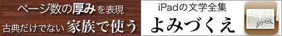
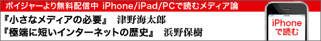

| メイン お知らせ 掲示板 別館 資料 運営 リンク | ||
 |
||
インターネットの電子図書館、青空文庫へようこそ。
初めての方はまず「青空文庫早わかり」をご覧ください。
| メインエリア | |||||||||||||||||||||||||||||||||||||||||||||||||||
|---|---|---|---|---|---|---|---|---|---|---|---|---|---|---|---|---|---|---|---|---|---|---|---|---|---|---|---|---|---|---|---|---|---|---|---|---|---|---|---|---|---|---|---|---|---|---|---|---|---|---|---|
| 青空文庫早わかり | 青空文庫の使い方と約束事を紹介しています。初めての方、ファイルやキャプチャーの取り扱いについて知りたい方も、こちらへどうぞ。 | ||||||||||||||||||||||||||||||||||||||||||||||||||
| 総合インデックス | 作家名、作品名の50音別に、公開作品と入力・校正作業中の作品を一覧できるインデックスです。公開中の作品を探すときは、下の近道もご利用ください。 | ||||||||||||||||||||||||||||||||||||||||||||||||||
| 公開中 作家別： |
あ行
か行
さ行
た行
な行
は行 ま行 や行 ら行 わ行 他 | ||||||||||||||||||||||||||||||||||||||||||||||||||
| 公開中 作品別： |
| ||||||||||||||||||||||||||||||||||||||||||||||||||
| 作業中： | 作家別・作品別 | ||||||||||||||||||||||||||||||||||||||||||||||||||
| 青空文庫 分野別リスト | 分野別に公開作品を一覧できる、インデックスです。 | ||||||||||||||||||||||||||||||||||||||||||||||||||
| お知らせ | |
|---|---|
| 新着情報 | 新規公開作品の一覧表です。随時更新。 |
| 最新公開作品： 06月25日 |
上司 小剣 『鱧の皮』 『兵隊の宿』 |
| そらもよう | 青空文庫からのお知らせを掲載します。 最終更新日：11年06月19日 |
| 訂正のお知らせ | 「むしとりあみ」の成果を掲載する場所です。不定期更新。 |

| 掲示板 | |
|---|---|
| みずたまり | 本を愛するものたちが集う掲示板です。（現在は運用を停止しています。経緯の詳細はこちらで。） |
| むしとりあみ | 誤植かな？と思ったときは、ここでご指摘ください。（現在は新規書き込みの受け付けを休止して、ファイル修正を進めています。） |
| こもれび | 情報共有のための掲示板です。「こんなとき、どうすれば？」と思ったら、ここで尋ねてみてください。
|

| 青空文庫・別館 | |
|---|---|
| 読書新聞：ちへいせん | 青空読書の合間に、一服。電子テキストをさまざまな切り口で加工してお届けします。随時更新。（公開を、一時停止しています。） |
| aozora blog | 青空文庫に、話題のブログ登場！ まずはのぞいてみてください。 |
| 明日の本棚 | JIS X 0213 対応のファイルを公開する実験サイトです。不定期更新。 |
| 小熊秀雄プロジェクト | 「ちへいせん」との連動企画。小熊秀雄作品を仮公開しています。 |
| 随筆計画2000 | 短い随筆で、読書、入力、校正に親しもう！ |

| 資料室 | |||||||||||||||||||||
|---|---|---|---|---|---|---|---|---|---|---|---|---|---|---|---|---|---|---|---|---|---|
| 青空工作員マニュアル | 入力、校正作業の虎の巻です。作業前に、必ず目をとおしてください。 | ||||||||||||||||||||
| 注記一覧 | テキスト版の注記の書き方をまとめています。作業時の友に。 | ||||||||||||||||||||
| 組版案内 | テキスト版をXHTML版に変換できます。プログラムも引き落とせます。 | ||||||||||||||||||||
| 青空文庫Ｑ＆Ａ | ブログを利用したＱ＆Ａページ。気まぐれに（？）増殖していきます。 | ||||||||||||||||||||
| 登録全作家インデックス | 登録されているすべての作家について、作品の登録状況、進行状況を確認できます。 | ||||||||||||||||||||
| 著作権が消滅した作家 | 青空文庫への登録が可能な作家のリストです。 | ||||||||||||||||||||
| アクセスランキング | XHTML版、テキスト版の、月間500位を示します。 | ||||||||||||||||||||
| 青空文庫読書ガイド | 青空文庫で公開しているファイル形式と、使い方についてご紹介しています。 | ||||||||||||||||||||
| 青空文庫検索ページ | 各種検索エンジンで青空文庫サイト内を検索できる、パワフル検索ページ。 | ||||||||||||||||||||
| TEXTの読み方 | 携帯端末などで電子テキストを楽しむための方法をご紹介しています。 | ||||||||||||||||||||
| 歩みの記録 |
これまでに公開したそらもようから、一里塚となるような、重要な話題をピックアップしました。
| ||||||||||||||||||||
| 運営について | |
|---|---|
| 青空文庫の提案 | 青空文庫が、どのようなコンセプトでスタートしたかをご紹介しています。 |
| 青空文庫のしくみ | 青空文庫が、どのようなしくみで運営されているかをご紹介しています。 |
| 会計報告 | 青空文庫の台所事情です。 |
| 直面した課題 | 過去に直面した問題点と対応をまとめています。 |
| リンク | |
|---|---|
| 電子テキストのある場所 | 青空文庫以外の、電子テキストのありかをご紹介しています。更新休止中。 |
| リンク（あれこれ） | 電子本サイトを中心としたリンク集です。更新休止中。 |
収録作品数：10240（著作権なし：10044、著作権あり：196）
 ←リンクの際にご利用ください。リンクは自由です。
←リンクの際にご利用ください。リンクは自由です。
このページのお問い合わせは、info@aozora.gr.jpまでお願いいたします。
Powered by ON TV Japan